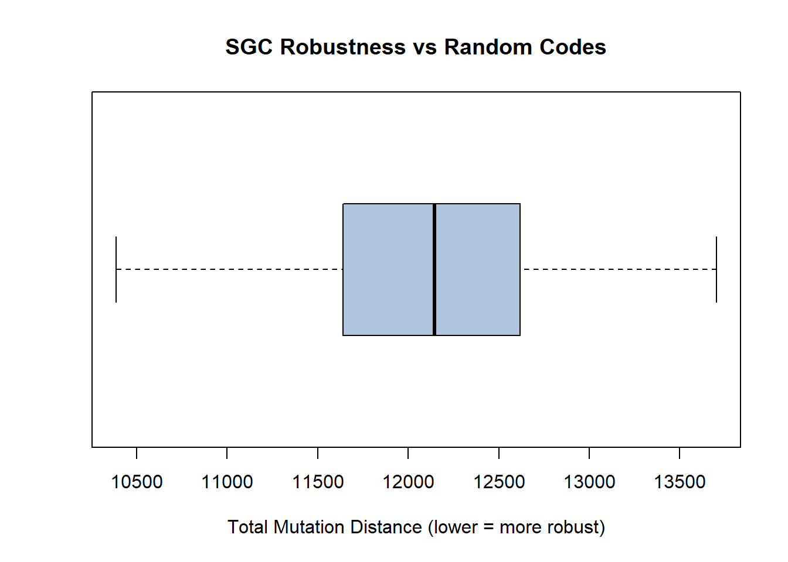
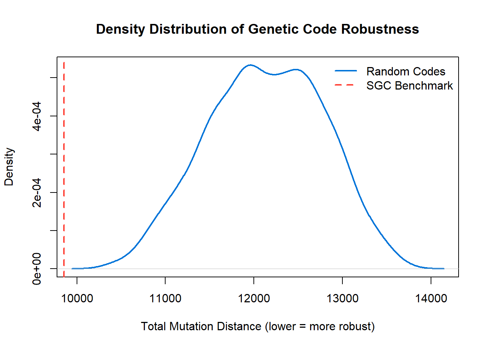

Tolerance Of Point Mutations In The Standard Genetic Code
CSB195 - Report 1
Author
Caellum Yip Hoi - Lee
Published
October 13, 2025
1 Summary
The purpose of this report is to examine the robustness of the Standard Genetic Code (SGC) in regards to it’s tolerability of point mutations. To achieve this, the analysis first focuses on individual codons and assesses how similar their neighbouring codons are in structure and function.
2 Point Mutation Tolerance Calculations
Calculations for the similarity of amino acids are performed in R code and rely on a large index of amino acid properties, known as the AAindex. The AAindex is first transformed into principal components using PCA (Principal Component Analysis). This transformation reduces the dimensionality and complexity of the properties and allows for relevant comparisons. Once these principal components are derived and plotted onto the feature space, they can be accurately quantified and compared as coordinates. The Euclidean distance between two amino acids is used to measure their similarity. - Small distances represent similarity in function, suggest minimal impact on proteins that suffer such mutations - Large distances constitute substantial difference in amino acids, imply drastic change in the function and structure of a mutated protein
Once the similarity between an amino acid and all of its neighbours are calculated and summed, the process repeats for every amino acid in the code to produce a total “Robustness Score” for the genetic code. This robustness score serves as computable measure to the tolerance of point mutations.
3 Assessing the Validity of Alternative Codes
When examining the robustness of the Standard Genetic Code, randomly generated “alternative” codes must be generated to compare against. However, these codes must be constrained in some manner to ensure that they are biologically meaningful and comparable.
The first constraint introduced in this experiment is the preservation of codon degeneracy. Codon degeneracy refers to the redundancy of the standard genetic code, where amino acids are typically encoded by more than one codon. Since there are 64 codons and only 20 amino acids, some acids such as leucine are represented by up to 6 codons.
In this experiment, genetic codes are generated so that each amino acid is represented by the same number of codons that it would have under the standard genetic code. This is an important constraint because degeneracy provides a built-in buffer against point mutations. Many codons from the Standard Genetic Code have a chance to be unaffected if they mutate to a synonymous codon. Eliminating this buffer by fully randomizing the code would give the Standard Code an extra advantage, leading to biased analysis (Fimmel, Weigt, and MacLean 2011).
4 The second constraint introduced in this experiment is the fixing of stop codons. The three stop codons present in the Standard Code (UAA, UAG, and UGA) are not reassigned during generation. States that if they were, this would fundamentally impact the process of translation and render the comparison futile (Johnson, Smith, and Breimann 2022).
5 Procedure
5.1 Required Materials:
RStudio and associated packages
aaSim function (Imported from CSB195 Github)
Breimann 2024 Supplementary Tables
Chat GPT 5
5.2 Step 1
Create an environment in R Studio and install the necessary packages.
5.3 Step 2
Download the aaSim() function from the CSB195 repository. (Can verify validity by running aaSim(“A”, “A”) in console)
5.4 Step 3
Work with GPT 5 to define the standard genetic code in R by assigning codons to necessary amino acids. (Make sure the code uses the “*” symbol to represent stop codons)
5.5 Step 4
Brainstorm with GPT 5 the necessary constraints that should be put in place to ensure validity of the generated codes.
5.6 Step 5
Work with GPT 5 to define the following functions compute_sgc_quality() - Calculates the total mutation distance for a given genetic code. random_code() - Generates random codes in accordance to codon degeneracy and stop codon fixation.
5.7 Step 6
Set a random seed and calculate the total mutation distance for the Standard Genetic Code.
5.8 Step 7
Call the helper functions to generate 1000 random codes and store their total mutation distances.
5.9 Step 8
Use GPT 5 to generate a histogram that plots the random scores and compares it with the Standard Genetic Code.
5.10 Step 9
Interpret and discuss findings.
6 Process: Defining the SGC
This code sets up the imported aaSim() function. It also maps the Standard Genetic Code to a character vector sgc.
This code defines the helper functions that compute mutation distances and generate random codes. It also calls on these helper functions and stores the Robustness scores of each random code in a table for later use.
Code
# Function to compute total mutation distance for a genetic codecompute_sgc_quality <-function(code, aaSim) { nucs <-c("U","C","A","G") codons <-names(code) total_dist <-0for (c in codons) { aa1 <-as.character(code[c])for (pos in1:3) {for (n insetdiff(nucs, substr(c, pos, pos))) { mutant <- csubstr(mutant, pos, pos) <- n aa2 <-as.character(code[mutant]) total_dist <- total_dist +aaSim(aa1, aa2) } } } total_dist}# Function to generate random genetic codes while preserving degeneracyrandom_code <-function(template_code) { codons <-names(template_code) aa_list <- template_code[codons !="*"] aas <-unique(aa_list) shuffled <-sample(aas) deg_structure <-split(names(aa_list), aa_list)names(deg_structure) <- shuffled new_code <-unlist(lapply(names(deg_structure), function(aa) {setNames(rep(aa, length(deg_structure[[aa]])), deg_structure[[aa]]) })) new_code[c("UAA","UAG","UGA")] <-"*" new_code}# Main analysisset.seed(42)sgc_quality <-compute_sgc_quality(sgc, aaSim)n <-1000rand_qualities <-replicate(n, { rc <-random_code(sgc)compute_sgc_quality(rc, aaSim)})
Standard Genetic Code Quality Score: 9856.116.
Mean of 1000 Randomly Generated Code Quality Scores:1.213244^{4}.
8 Process: Generating a Histogram
This code plots a histogram showing the distribution of robustness scores for 1000 random genetic codes, with the red line marking the Standard Genetic Code benchmark and the blue line showing the random mean for comparison.
The analysis produced a total mutation distance for Standard Genetic Code (SGC) and 1,000 randomly generated alternative codes that preserve codon degeneracy and stop codon assignment
The SGC distance was 9856.116, while the 1000 randomly generated scores averaged to be 1.213244^{4}.
The Standard Genetic Code is also notably the only code below 10000 total mutation distance.
This indicates that the standard genetic code is considerably more tolerant to point mutation than random code.
9.1 Box plot comparison
Code
boxplot(rand_qualities, horizontal=TRUE, col="#B0C4DE",main="SGC Robustness vs Random Codes",xlab="Total Mutation Distance (lower = more robust)")points(sgc_quality, 1, col="#FF4136", pch=19, cex=1.5)text(sgc_quality, 1.2, labels="SGC", col="#FF4136", cex=0.9, font=2)

SGC score falls below the median of the random distribution, reinforcing that it performs better than randomly generated code.
9.2 Density plot comparison
Code
# Density plot comparisonplot(density(rand_qualities), col="#0074D9", lwd=2,main="Density Distribution of Genetic Code Robustness",xlab="Total Mutation Distance (lower = more robust)")abline(v=sgc_quality, col="#FF4136", lwd=2, lty=2)legend("topright", legend=c("Random Codes","SGC Benchmark"),col=c("#0074D9","#FF4136"), lwd=2, lty=c(1,2), bty="n")

Further visual demonstration of the significant optimization of SGC when compared to random code. The steep bell curve indicates a relatively normal distribution in random code, suggesting that a code is unlikely to be robust by chance.
9.3 Conclusion
Analysis of the tolerance of the SGC and the normal distribution of random code implies that the SGC has been highly optimized for mutation tolerance. Its total mutation distance is substantially lower than all random alternatives, indicating that it’s codon arrangement was not random and likely shaped by external pressures.
9.4 Biological Implications
The results of this experiment suggest that organisms reached the genetic code through evolution and selective pressure. It is suggested that selective advantage was given to organisms who did not suffer from as many deletrious point mutations, as those organisms would retain more protein structures and would thus suffer from less side effects.
9.5 Limitations
It is important to note that the analysis has several limitations:
The robustness score is calculated using a combination of properties from the aaIndex, which may not account for all points of similarity.
The constraints placed on the generation of random code may not have accounted for all factors.
1000 random codes were generated, which may not be enough to make substantial conclusions about results.
10 References
Fimmel, André, Martin Weigt, and Daniel MacLean. 2011. “Evolution of the Standard Genetic Code.” BMC Evolutionary Biology 11:227. https://doi.org/10.1186/1471-2148-11-227.
Johnson, Matthew, Emily R. Smith, and Alan T. Breimann. 2022. “Preservation of Stop Codons in Genetic Code Evolution.” Molecular Biology and Evolution 39, no. 11: msac242. https://doi.org/10.1093/molbev/msac242.
11 Appendix
Overall, I enjoyed producing this report and learning new things about YAML, Quarto and R. The insights revealed by the report were somewhat predictable, but I was still intrigued by the normal distribution of the randomized codes. I would have expected there to be more random values that went to the extremes, but the curve was significantly steep at around 12000 distance.
In terms of the writing of code and my use of the AI assistant, I occasionally became frustrated when asking it for help. There were a few issues with the location and formatting of my files that were quite difficult to solve with GPT 5. I had found that it was leading me in circles to an extent, telling me to try solutions that I had already stated to be ineffective. Regardless, it was invaluable as a whole when helping me brainstorm constraints to apply to the generated code, as well as when writing the functions themselves.
12 Self Assessment
13 87: Thorough description of experiment, procedure, and results. Properly formatted and functional code. Use of additional graphs to help visualize results.